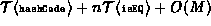

Data Structures and Algorithms
with Object-Oriented Design Patterns in Java
Data Structures and Algorithms
with Object-Oriented Design Patterns in Java
The find and findMatch methods
of the OpenScatterTable class are defined
in Program  .
The findMatch method takes a Comparable object
and searches the scatter table for an object which matches the given one.
.
The findMatch method takes a Comparable object
and searches the scatter table for an object which matches the given one.
Program: OpenScatterTable Class findMatch and find methods.
findMatch follows the same probing sequence used by the insert method. Therefore, if there is a matching object in the scatter table, findMatch will make exactly the same number of probes to locate the object as were made to put the object into the table in the first place. The findMatch method makes at most M probes, where M is the size of the scatter table. However, note that the loop immediately terminates should it encounter an empty location. This is because if the target has not been found by the time an empty cell is encountered, then the target is not in the table. Notice also that the comparison is only attempted for entries which are marked occupied. Any locations marked deleted are not examined during the search but they do not terminate the search either.
The running time of the find method is determined by that of findMatch. In the worst case findMatch makes n comparisons, where n is the number of items in the table. Therefore, the running time of find is .
 Copyright © 1998 by Bruno R. Preiss, P.Eng. All rights reserved.
Copyright © 1998 by Bruno R. Preiss, P.Eng. All rights reserved.